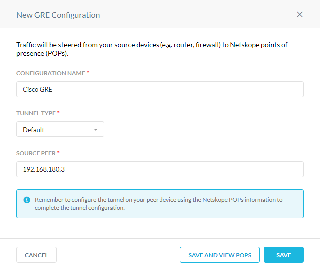

Netskope GRE with Cisco IOS
Netskope supports Generic Route Encapsulation (GRE) tunnels as a traffic steering method. GRE tunnels allow you to route web traffic (port 80 and 443) to Netskope using logical tunnel interfaces that terminate to a Netskope GRE gateway. When you create GRE tunnels in Netskope, parameters for configuring the tunnels are provided. The GRE configuration below utilizes Cisco IOS XE commands and concepts.
This guide illustrates how to configure GRE tunnels between Netskope and the following Cisco routers:
Cisco CSR 1000v (VXE) running IOS XE version 17.03.03
Cisco ISR 3900 (C3900-UNIVERSALK9-M) running IOS XE version 15.4(3)M3
You must define the GRE tunnel interfaces and failover methods. To meet your individual SLAs or requirements, you can modify certain parameters such as interfaces, timeouts, and thresholds. To learn more about the CLI steps on Cisco IOS XE, see the Cisco documentation.
Prerequisites
Before configuring GRE, review the guidelines and prerequisites.
To create the GRE tunnels for Cisco routers in the Netskope UI:
Go to Settings > Security Cloud Platform > GRE.
Click New GRE Configuration.
In the New GRE Configuration window:
Configuration Name: Enter a name for the GRE tunnel.
Tunnel Type: Select Default.
Source Peer: Enter the source peer IP address (i.e., exit public IP) of the Cisco router that Netskope will receive packets from. Netskope identifies traffic belonging to your organization through your router or firewall IP addresses.
Click Save and View POPs.
In the Netskope POPs window, copy the GRE Gateway IP address of the two closest Netskope POPs. You need this information to establish the GRE tunnels on your Cisco routers. For optimal performance, Netskope recommends using the geographically closest POPs and configuring at least two tunnels for each egress location in your network.

Log in to your Cisco router.
Enter configuration mode:
#configure terminal
Create your tunnel interface with an ID:
#Interface Tunnel1
Enter an IP address for the interface. It can be any one you choose.
(config-if)#ip address 192.168.100.2 255.255.255.254
Enter the MSS value for the interface. To learn how to calculate this value, see GRE.
(config-if)#ip tcp adjust-mss 1436
Set the tunnel source interface, which is the interface that the tunnel is attached to. It's typically the public interface of the router.
(config-if)#tunnel source GigabitEthernet0/0
Set the tunnel destination to the IP address of the primary Netskope POP, which you copied in Creating GRE Tunnels in Netskope):
(config-if)#tunnel destination 10.136.176.49
To verify the primary tunnel interface is up and running on your router, you can enter the show ip interface brief command. If the configuration is successful, the Status and Protocol will be UP.
Interface IP-Address OK? Method Status Protocol GigabitEthernet0/0 10.2.10.85 YES DHCP up up GigabitEthernet0/1 10.2.16.139 YES NVRAM up up Tunnel1 10.2.10.85 YES TFTP up up Tunnel2 10.2.10.85 YES TFTP up up VirtualPortGroup0 192.168.35.101 YES NVRAM up
Create your tunnel interface with an ID:
#Interface Tunnel2
Enter an IP address for the interface. It can be any one you choose.
(config-if)#ip address 192.168.100.4 255.255.255.254
Enter the MSS value for the interface. To learn how to calculate this value, see GRE.
(config-if)#ip tcp adjust-mss 1436
Set the tunnel source interface, which is the interface that the tunnel is attached to. It's typically the public interface of the router.
(config-if)#tunnel source GigabitEthernet0/0
Set the tunnel destination to the IP address of the backup Netskope POP, which you copied in Creating GRE Tunnels in Netskope):
(config-if)#tunnel destination 10.136.176.61
To verify the backup tunnel interface is up and running on your router, you can enter the show ip interface brief command. If the configuration is successful, the Status and Protocol will be UP.
Interface IP-Address OK? Method Status Protocol GigabitEthernet0/0 10.2.10.85 YES DHCP up up GigabitEthernet0/1 10.2.16.139 YES NVRAM up up Tunnel1 10.2.10.85 YES TFTP up up Tunnel2 10.2.10.85 YES TFTP up up VirtualPortGroup0 192.168.35.101 YES NVRAM up
You can use the route map to only route web traffic on ports 80 and 443 to through the GRE tunnels.
To configure an access control list (ACL) and route map:
Create an ACL for the traffic you want to match and apply the route map to:
(config)#access-list 110 permit tcp any any eq www (config)#access-list 110 permit tcp any any eq 443
Define a route map to match traffic against:
(config)#route-map netskope-tunnel permit 15
Assign the access-list to the route map you created in Step 2:
(config-route-map)#match ip address 110
Set the tunnel interfaces in order of priority:
(config-route-map)#set interface Tunnel1 Tunnel2
Apply the route map to the interface that the traffic must be rerouted from:
(config-route-map)#Interface GigabitEthernet0/0 (config-if)#ip policy route-map netskope-tunnel
Cisco provides two options to automate failover between the primary and backup GRE tunnels. You can use keepalives on the tunnel or combine IP SLA with Embedded Event Manager (EEM) to automate the failover. Netskope recommends using GRE keepalives because they are easy to configure.
Configure your tunnel interfaces for keepalives (the parameters 10 and 3 are for demonstration purposes only. They need to be tuned to your environment and thresholds. The first parameter is the keepalive period and the second is the number of keepalive retries before the tunnel will be changed to a down state until the keepalive succeeds again.
(config)#interface tunnel1 (config-if)#keepalive 10 3 (config-if)#interface tunnel2 (config-if)#keepalive 10 3
To learn more about monitoring GRE tunnels with keepalives, see GRE. To learn more about GRE keepalives, see the Cisco documentation.
Configure host routes to the primary and backup probe IP addresses through their corresponding tunnel interface.
(config)#ip route 172.17.89.18 255.255.255.255 Tunnel1 (config)#ip route 172.20.16.15 255.255.255.255 Tunnel2
Ping the probe to test it's reachability.
Configure the IP SLA objects:
(config)#ip sla 1 (config-ip-sla)#icmp-echo 172.17.89.18 source-interface Tunnel1 (config-ip-sla-echo)#threshold 500 (config-ip-sla-echo)#frequency 5 (config)#ip sla schedule 1 life forever start-time now (config)#ip sla 2 (config-ip-sla)#icmp-echo 172.20.16.15 source-interface Tunnel2 (config-ip-sla-echo)#threshold 500 (config-ip-sla-echo)#frequency 5 (config)#ip sla schedule 2 life forever start-time now
Track the IP SLA objects. The Event Manager uses this to trigger failover.
(config)#track 1 ip sla 1 (config-track)#delay down 10 up 15 (config)#track 2 ip sla 2 (config-track)#delay down 10 up 15
Configure an Event Manager applet that allows failover to the backup tunnel based on the primary tunnel's IP SLA and resumes using the primary tunnel when it's healthy again.
(confg)#event manager applet Primary_Tunnel_State_Down (config-applet)#event track 1 state down (config-applet)#action 1 wait 3 (config-applet)#action 2 cli command “enable” (config-applet)#action 3 cli command “config t” (config-applet)#action 4 cli command "route-map netskope-tunnel" (config-applet)#action 5 cli command “no set interface Tunnel1 Tunnel2” (config-applet)#action 5 cli command “set interface Tunnel2” (confg)#event manager applet Primary_Tunnel_State_Up (config-applet)#event track 1 state up (config-applet)#action 1 wait 3 (config-applet)#action 2 cli command “enable” (config-applet)#action 3 cli command “config t” (config-applet)#action 4 cli command "route-map netskope-tunnel" (config-applet)#action 5 cli command “no set interface Tunnel2” (config-applet)#action 5 cli command “set interface Tunnel1 Tunnel2”
These two applets only apply when the primary tunnel goes up or down. You can define more applets for when the failover tunnel state changes or if both tunnels states go down.
Below is a sample CLI GRE tunnel configuration for Cisco routers:
interface GigabitEthernet0/0 description "External network - VLAN180" ip address 192.168.180.3 255.255.252.0 ip nat outside ip virtual-reassembly in duplex auto speed auto ! interface GigabitEthernet0/1 description "Internal network - VLAN119" ip address 192.168.119.3 255.255.255.0 ip virtual-reassembly in ip policy route-map gre-automation duplex auto speed auto ! interface Tunnel1 description "Primary GRE Tunnel" ip unnumbered GigabitEthernet0/0 ip virtual-reassembly in ip tcp adjust-mss 1436 keepalive 10 3 tunnel source GigabitEthernet0/0 tunnel destination 10.136.176.49 ! interface Tunnel2 description "Backup GRE Tunnel" ip unnumbered GigabitEthernet0/0 ip virtual-reassembly in ip tcp adjust-mss 1436 keepalive 10 3 tunnel source GigabitEthernet0/0 tunnel destination 10.136.176.61 ! ip access-list extended 2000 10 permit tcp any any eq 443 20 permit tcp any any eq www ! route-map netskope permit 10 match ip address 2000 set interface Tunnel1 Tunnel2